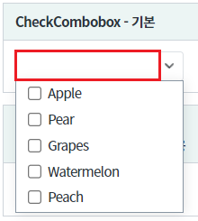
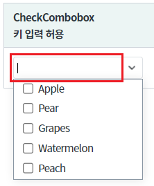
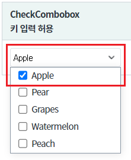
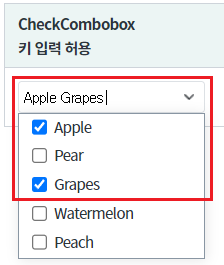
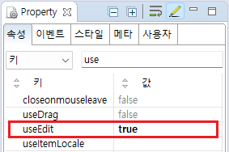
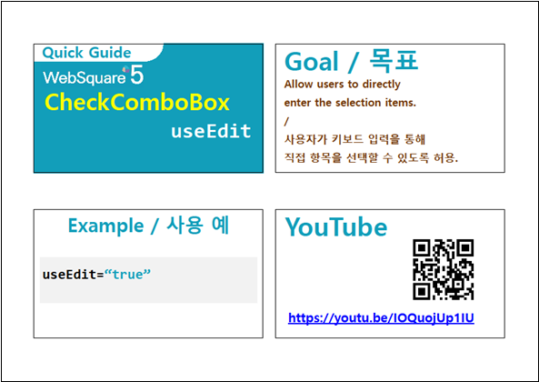

컴포넌트에 사용자가 값을 입력하여 항목을 선택하는 예제입니다.
기본
사용자의 입력을 허용하여 항목 선택하기
선택된 값이 출력되는 영역을 클릭하면 목록이 영역이 노출됩니다. (사용자 입력 불가)
그림 1.브라우저(Chrome) 실행 예시 - 기본 동작 - 키 입력 불가 상태

선택된 값이 출력되는 영역을 클릭하면 목록이 영역이 노출되고, 사용자 입력도 가능합니다.
[브라우저(Chrome) 실행 예시 - 키 입력 허용 상태]

Apple 을 입력하면 Apple이 선택되는 것을 확인 할 수 있습니다. 문자열 뒤에 빈 문자열(공백)은 선택된 항목간의 구분자입니다.
[브라우저(Chrome) 실행 예시 - 입력된 값이 선택된 상태]

아래의 이미지는 Apple Grapes 을 입력한 경우입니다.
[브라우저(Chrome) 실행 예시 - "Apple Grapes "이 입력된 값이 선택된 상태]

컴포넌트의 목록으로 출력될 데이터를 할당합니다. 하드 코딩, 스크립트로 할당, DataList 연동 모두 가능합니다. 데이터 할당하는 예시는 생략합니다.
목록의 데이터 할당 방법은 아래의 링크를 통해 확인할 수 있습니다.
[웹스퀘어5 SP5 개발 가이드] CheckComboBox 항목 설정
링크 : https://docs1.inswave.com/sp5_user_guide/8df43d1f59fab704#60e5063481c9c2ff
컴포넌트의 속성을 정의합니다.
useEdit="true" //[default : false, true] checkcombobox 값을 직접 타이핑하여 편집할 수 있는 기능을 제공합니다.
그림 2.웹스퀘어5 SP5 스튜디오의 Property View(속성창) 예시

<!-- CheckCombobox의 소스 본문 예시 --> <xf:checkcombobox useEdit="true"> <!-- 중략 --> </xf:checkcombobox>
useEdit
[웹스퀘어5 SP5 개발 가이드] CheckComboBox
링크 : https://docs1.inswave.com/sp5_user_guide/8df43d1f59fab704#00d68253341f365d
[웹스퀘어5 SP5 개발 가이드] CheckComboBox 키보드 입력을 통한 항목 선택
링크 : https://docs1.inswave.com/sp5_user_guide/8df43d1f59fab704#2d806aa534135c3c
CheckComboBox 키보드 입력을 통한 항목 선택
링크 : https://youtu.be/IOQuojUp1IU
